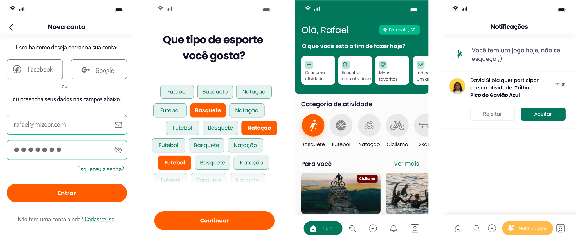

Mizoor.
Um app para quem quer praticar esporte, mas não tem com quem nem onde. Fundei com mais três sócios em 2019.
O problema é tempo e companhia.
- 69,8%
- abandonam o esporte por falta de tempo ou outras prioridades
- Ministério do Esporte, pesquisa de 2013
- 53%
- dos brasileiros gostariam de praticar mais esportes
- Ipsos, via CNN Brasil
- US$ 2,1 bi
- movimentados pelo mercado de atividade física no Brasil
- VocêRH
Quatro pessoas que conhecemos bem.
Saídas do mapa de empatia. O MVP mira as três primeiras.
- 1
Travoltinha do esporte
Não sabe por onde começar.
- 2
Forever alone
Quer praticar, mas não tem com quem.
- 3
Eterno promessinha
Sempre vai começar na segunda.
- 4
Amante da endorfina
Quer se mexer a toda hora, em todo lugar.
Uma comunidade fora da academia.
O app conecta quem quer se exercitar e mostra, num mapa atualizado pelos próprios usuários, as quadras, praças e praias onde dá para jogar.
O foco é pertencimento, não performance.
Para quem pratica
- Encontrar companhia no mesmo nível
- Achar lugares para jogar perto de casa
- Sair do digital para o encontro de verdade
Para patrocinadores
- Audiência esportiva qualificada
- Iniciantes e intermediários
- Dados usados de acordo com a LGPD
O MVP, priorizado.
Método MoSCoW. Escolha um grupo.
- Cadastro, login e perfil
- Comunidades e chat da atividade
- Criar, listar e convidar para atividades, com histórico
- Mapa de espaços e geolocalização
- Pedido de cadastro de novo local
- Notificações
- Filtro de busca
- Avaliação de usuário e de atividade
- Recomendações
- Ranking dos esportes mais praticados
- Régua de evolução e progresso compartilhado
- Personal trainer
- Gamificação
- Marketplace
- Encontrar amigos das redes sociais
- Clube de benefícios

Do protótipo ao app.
- App
- React Native, com versão web em React
- Back-end
- PHP e MySQL
- Plano
- 5 meses, 10 sprints de Scrum
O plano para dois anos.
Projeções do plano de negócio, começando por São Paulo. Metas, não resultados.
- 100 mil
- usuários na meta do primeiro ano
- 220 mil
- usuários projetados em dois anos
- R$ 5,6 mi
- de receita com cotas de patrocínio
- 1,45
- anos para o break-even
Quatro sócios.
Rafael Zigart
Founder, CEO e CPO
Produto, P&D e o time de desenvolvimento.
Helio Matsuda
COO
Operações, processos e fornecedores.
Luana Paganini
CCO
Vendas guiadas por dados.
Fabio Takahashi
CGO
Marketing digital e crescimento.